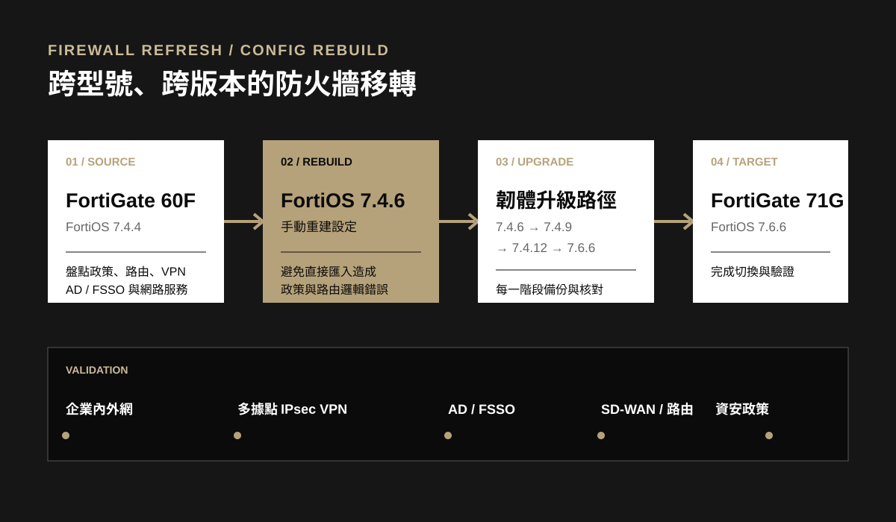

介面與基礎網路
建立 LACP 聚合、VLAN、WAN、DMZ、DNS、靜態路由、政策路由與 Virtual IP，並核對多介面政策需求。
專案紀錄｜客戶與連線資訊已匿名處理
將既有 FortiGate 60F 的企業網路設定移轉至 FortiGate 71G。因型號與 FortiOS 版本跨度較大，無法直接套用舊設定，我改採手動重建、分段升級與兩次現場切換，最後完成政策路由、AD、FSSO、SD-WAN 及多據點 IPsec VPN 的完整驗證。
BACKGROUND
客戶需要汰換既有防火牆，同時保留原有的企業內外網、各據點 VPN、AD 身分驗證、FSSO、雙 WAN 備援與資安政策。切換期間會停止全部網路服務，因此可用的維護時間十分有限。
舊設備使用 FortiOS 7.4.4，新設備目標版本為 7.6.6，且硬體型號不同。直接匯入舊 Config 可能造成物件、政策順序與路由邏輯異常，因此決定先於相近版本手動重建，再循官方升級路徑逐段更新。
MIGRATION FLOW

來源盤點：整理介面、VLAN、物件、政策、路由、VPN、身分驗證及資安服務。
手動重建：先在 FortiOS 7.4.6 建立可控基線，避免直接匯入舊 Config 的相容性風險。
分段升級：依 7.4.6 → 7.4.9 → 7.4.12 → 7.6.6 升級，每一階段備份並核對設定。
CONFIGURATION
建立 LACP 聚合、VLAN、WAN、DMZ、DNS、靜態路由、政策路由與 Virtual IP，並核對多介面政策需求。
重建多條 IPsec VPN 與雙 WAN SD-WAN，設定健康檢查與優先路徑，確保各據點及雲端服務可連通。
恢復網域整合、身分群組與 FSSO 外部連接器，讓既有以使用者身分為基礎的上網政策繼續運作。
重建防毒、網站過濾、應用程式控制、SSL 檢查、排程、QoS、SNMP 與相關記錄設定。
政策、物件或路由邏輯可能因版本差異失效。
不直接套用 Config，改採盤點後手動重建，並逐項比對。
升級後可能出現政策順序或功能行為改變。
依建議路徑分段升級，每階段保留備份與驗證點。
無法在維護窗口內完成排錯，影響營運。
事前預建、列出驗證清單，並保留快速回復舊設備的程序。
CUTOVER
在新設備上手動建立設定，完成韌體升級路徑，並準備服務、VPN 與回復檢查表。
中午將線路移至新防火牆後，出現內網不通、政策排序異常、VPN 無法連線、AD 與 FSSO 連接失敗。因維護窗口僅一小時，依計畫先回復舊設備。
確認 VPN 可在測試環境正常運作，排除硬體邏輯問題；再重新更新韌體並手動建立政策，避免先設定後升級造成的政策邏輯偏移。
政策、內網與 AD 均恢復正常，但少數 VPN 據點仍無法連通，FSSO 外部連接器也因憑證相容性無法完成連線。
核對後發現部分據點的預共享金鑰資料與實際環境不一致，修正後 VPN 全數恢復；FSSO 先以非憑證模式驗證功能，再由客戶更新相容憑證。
TROUBLESHOOTING
RESULT
FortiGate 71G 與目標 FortiOS 版本正式承接既有企業網路服務。
內外網、VLAN、SD-WAN、政策路由與資安服務完成逐項驗證。
修正不一致的連線參數後，各據點 IPsec VPN 均可正常通訊。
AD 整合正常，FSSO 完成功能驗證，憑證則交由客戶更新為相容版本。
這次移轉的關鍵不是「把設定搬過去」，而是先建立可驗證的設定基線，再把韌體、政策、VPN 與身分整合拆成獨立的測試項目。
MY RESPONSIBILITIES
盤點舊防火牆介面、VLAN、政策、路由、VPN、AD、FSSO 與資安功能。
評估跨型號、跨版本直接匯入的風險，制定手動重建與分段升級方式。
在新設備重建 LACP、SD-WAN、DMZ、政策路由、Virtual IP 與安全設定。
執行兩次現場切換、回復及服務驗證，控制維護窗口對營運的影響。
排查政策順序、VPN 預共享金鑰、AD 與 FSSO 憑證相容性問題。
完成設定文件與公開案例整理，敏感資訊均經匿名及移除處理。
PROJECT INDEX
返回所有專案 ↗